2nd Street, Old City
Hey Everyone! Long time no see!
Wanted to experiment some with stylized PBR more on the realistic side, like the Alberto Mielgo style I wanted everything from afar to be fairly realistic, but show some stylized detail upclose, and also use gradients here and there and some halftones to stylize roughness. I feel like this was a successful experiment, even if maybe more realistic than intended!
The train was an afterthought, as such it does not belong to me, it's from a Dekogon pack.
However, I was able to stretch my cinematic legs and make a little cutscene for the scene, which I enjoyed quite a lot!
Special thanks to artstation.com/rankoprozo for feedback.
Thanks Everyone!


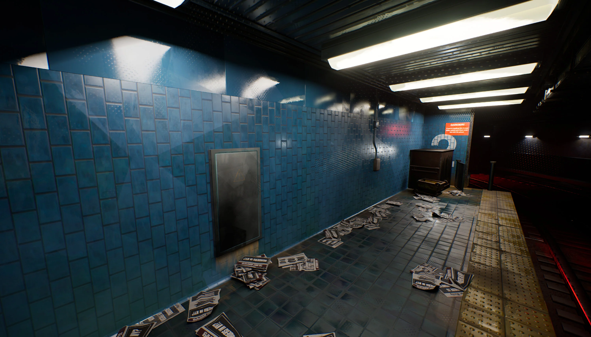
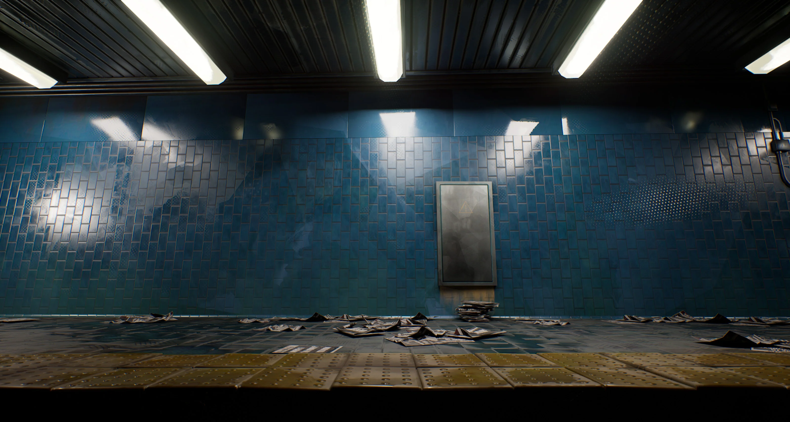
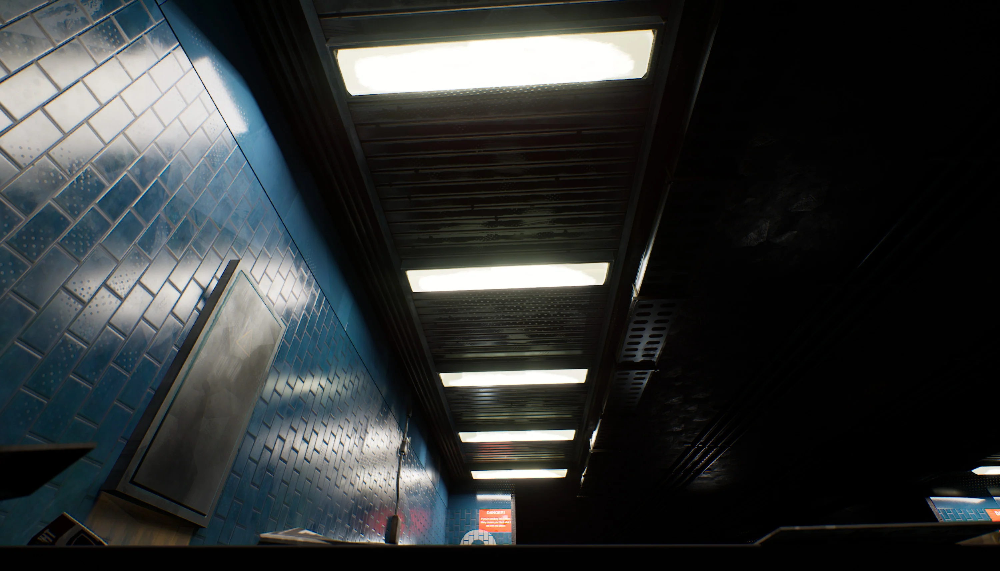
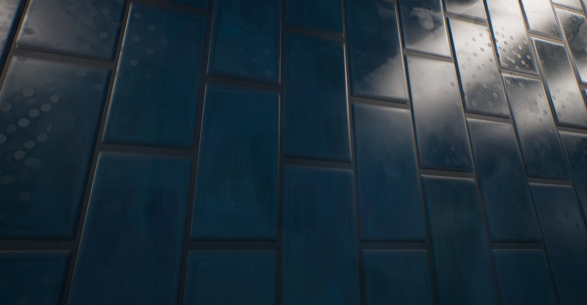
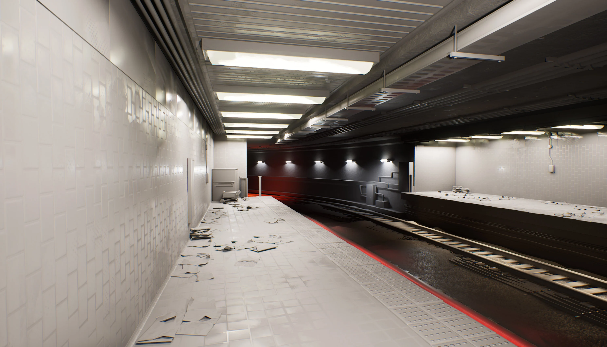
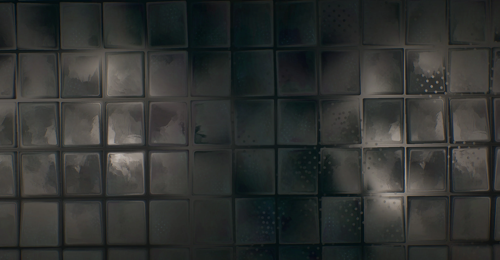
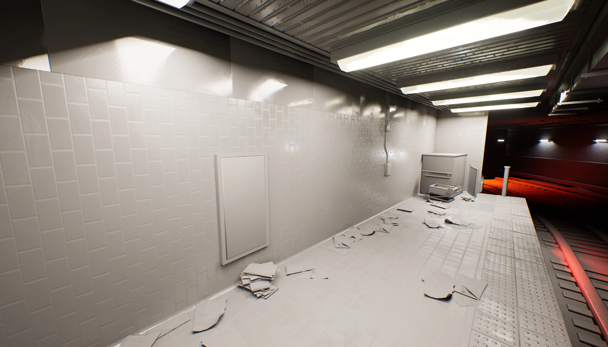
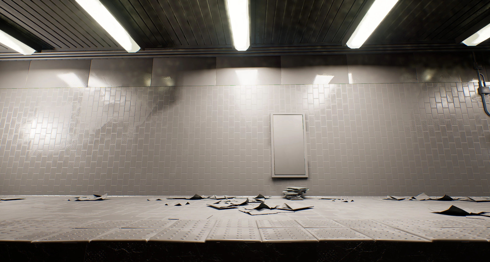
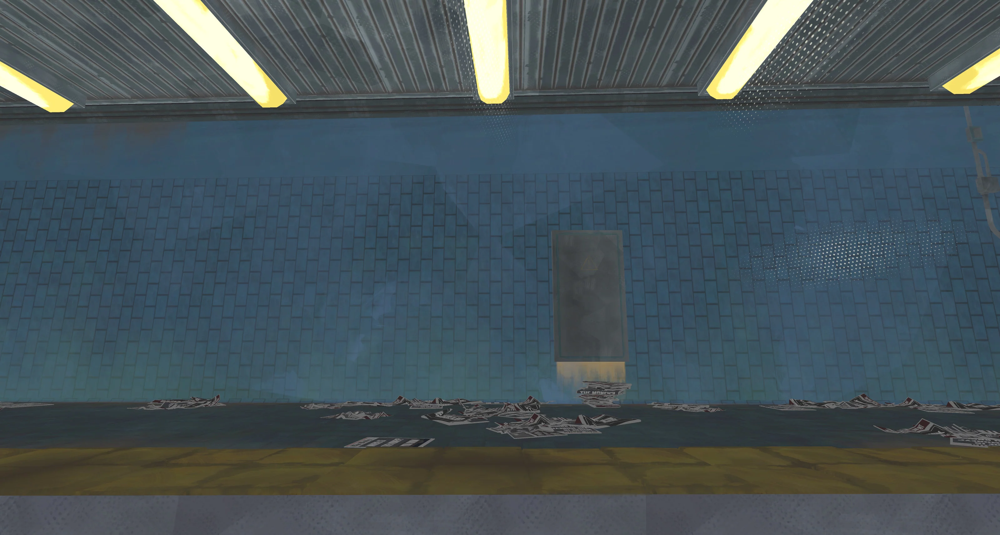
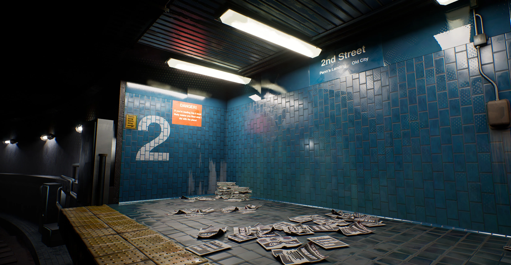
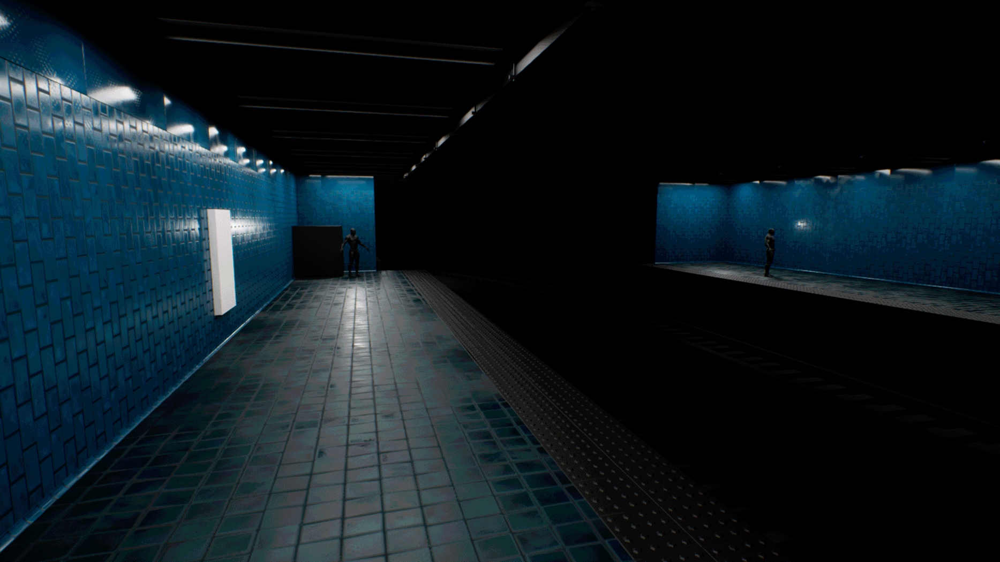